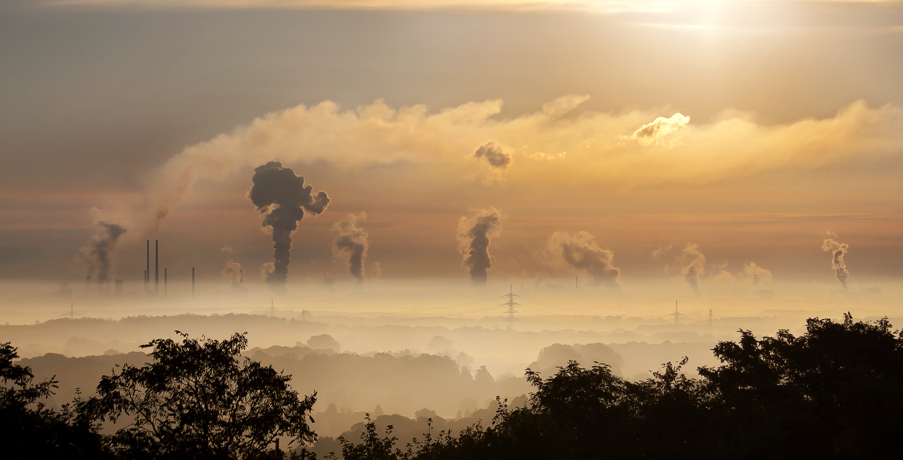
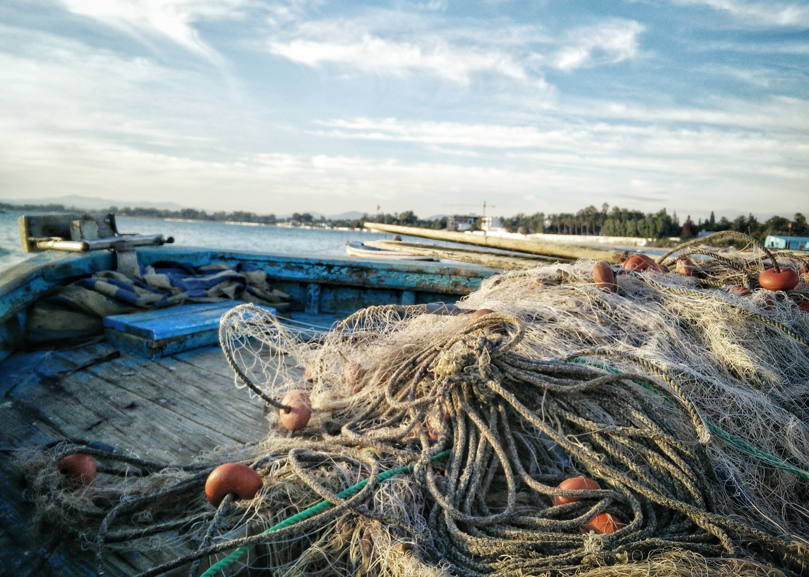
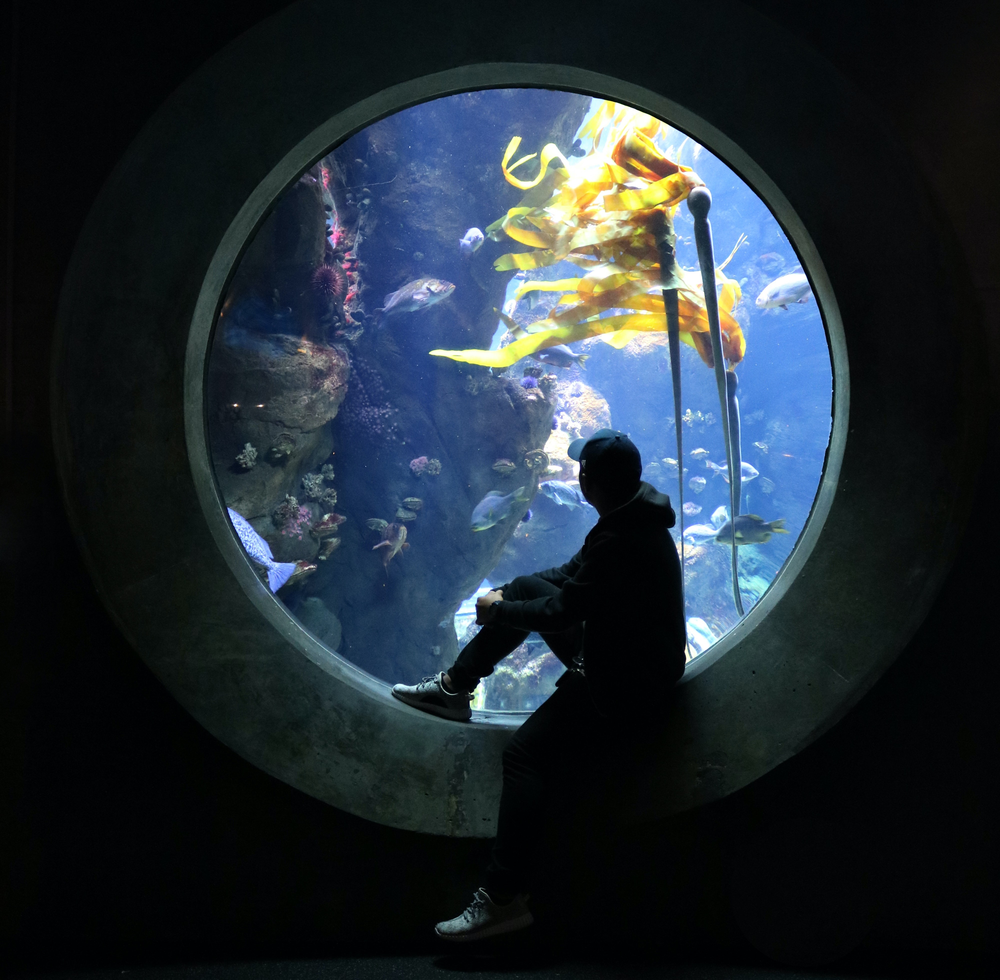
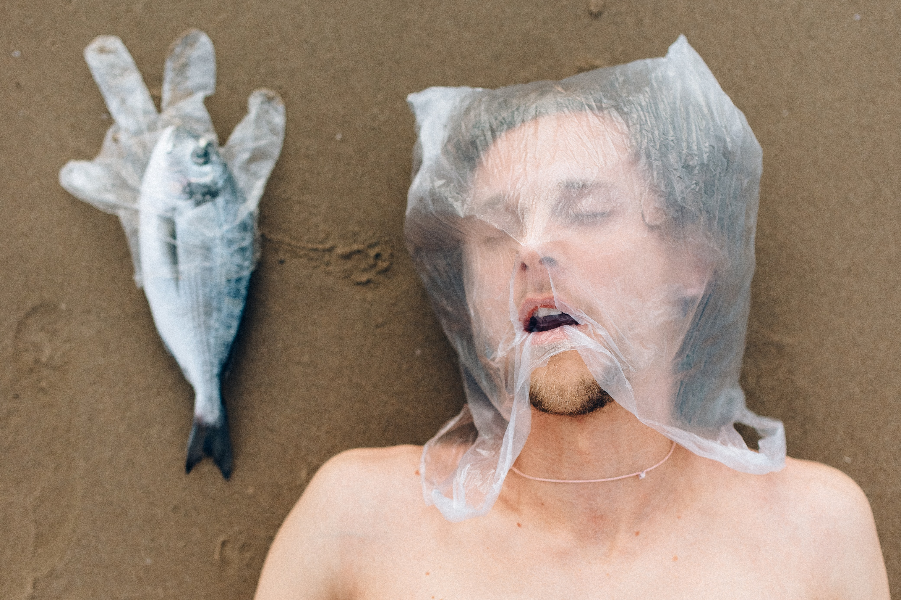

L’aumento dell’acidità degli oceani è provocato dall’incremento della concentrazione di anidride carbonica nell’atmosfera e dal conseguente aumento delle temperature. È un fenomeno molto dannoso e pericoloso: riduce infatti la capacità dell’oceano di assorbire CO2 e mette in pericolo la vita marina.
L’acidità degli oceani è aumentata del 26% rispetto al periodo pre-industriale. E le previsioni dicono che entro il 2100 si assisterà a un incremento del 100-150%.

Un altro aspetto preoccupante per la vita degli oceani è la drastica riduzione della fauna ittica causata dalla
pesca eccessiva o condotta con tecniche distruttive che impedisce il rinnovamento delle popolazioni marine.
I prodotti della pesca sono sempre più richiesti nell’alimentazione umana, ma il pesce diminuisce (ed è sempre meno sano).
Un dato su tutti: la percentuale di stock ittici biologicamente sostenibili è diminuita in 40 anni dal 99% (1974) al 67% (2015).

Per comprendere il valore delle risorse marine, basta considerare i principali vantaggi
che le acque e gli oceani apportano alla vita dell’uomo. Ecco un elenco proposto dall’ONU Italia:
- il 90% del commercio globale utilizza il trasporto marino;
- i cavi sottomarini trasmettono il 95% di tutte le telecomunicazioni globali;
- la pesca e l’acquacoltura forniscono a 4,3 miliardi di persone più del 15% del consumo annuale di proteine animali;
- più del 30% dell’olio e gas globale prodotto è estratto in mare aperto;
- il turismo costiero è il settore di mercato maggiore nell’economia mondiale,
includendo il 5% del prodotto interno lordo globale e dal 6 al 7% dell’occupazione globale;

L’Agenda 2030 ha suddiviso il quattordicesimo Goal in dieci target,
che mirano a proteggere questo immenso ambiente oggi in pericolo,
ma indispensabile per la sopravvivenza della vita sulla terraferma.
Focus

Le acque marine sono state ormai in gran parte compromesse dalle attività umane. In particolare l’inquinamento dovuto alla plastica è responsabile di danni consistenti all’ambiente marino.
Dalla metà del secolo scorso sono stati prodotti 8 miliardi di tonnellate di plastica e il 90% non è mai stato riciclato. Oltre 9 milioni di tonnellate di rifiuti di plastica finiscono nei nostri oceani ogni anno e, senza interventi, questo numero dovrebbe quasi raddoppiare fino a raggiungere i 17 milioni di tonnellate all’anno entro il 2025. Questa enorme quantità di materiale si è dispersa nell’ambiente, nelle discariche o nei fiumi, attraverso i quali è arrivata (e continua ad arrivare) negli oceani.